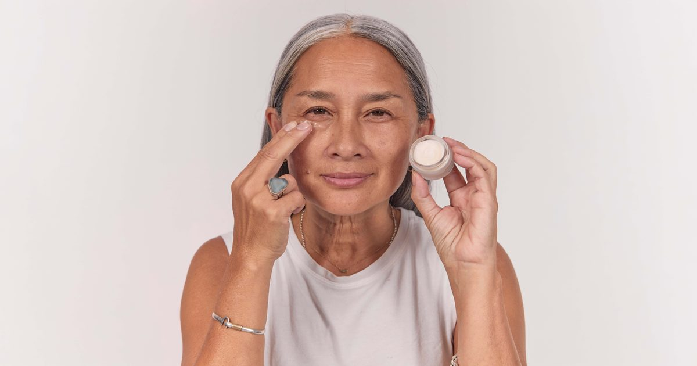

7 лучших кремов для укрепления век, испытанных в 2026 году, одобренных дерматологами
Эти одобренные дермой формулы могут смягчить складки, увлажнить кожу и проложить путь к более ярким глазам.

Эти одобренные дермой формулы могут смягчить складки, увлажнить кожу и проложить путь к более ярким глазам.